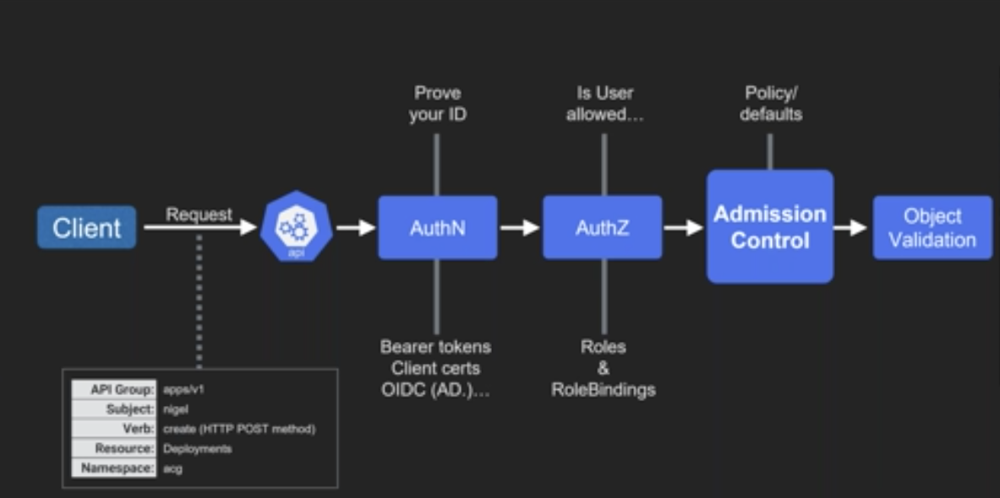

Kubernetes
Quick Reference¶
Minikube¶
- starts minikube
minikube start - stops the minikube virtual machine
minikube stop - completely wipe away the minikube image. Also you can delete all files in
/.minikube and /.kube. minikube delete - find out the required environment variables to connect to the docker daemon running in minikube
minikube env - find out the ip address of minikube. Needed for browser access.
minikube ip
Kubectl¶
- get help
kubectl explain pods - list all namespaces
kubectl get ns - list all objects that you’ve created. Pods at first, later, ReplicaSets, Deployments and Services
kubectl get all - either creates or updates resources depending on the contents of the yaml file
- kubectl apply –f <yaml file> - apply all yaml files found in the current directory
kubectl apply –f . - gives full information about the specified pod
kubectl describe pod <name of pod> - gives full information about the specified service
kubectl describe svc <name of pod> - view pod logs
kubectl logs {pod-name} - Events
kubectl get events --sort-by=.metadata.creationTimestamp - execute the specified command in the pod’s container. Doesn’t work well in Cygwin.
kubectl exec –it <pod name> <command> - get all pods or services. Later in the course, replicasets and deployments.
kubectl get (pod | po | service | svc | rs | replicaset | deployment | deploy) - get all pods and their labels
kubectl get po --show-labels - get all pods matching the specified name:value pair
kubectl get po --show-labels -l {name}={value} - delete the named pod. Can also delete svc, rs, deploy
kubectl delete po <pod name> - delete all pods (also svc, rs, deploy)
kubectl delete po --all - Monitor changes:
--watch - Diff:
kubectl diff -f example.yaml - CPU/Memory usage:
kubectl top pods
Deployment Management¶
- create:
kubectl create deployment example --image=<image-name> - expose:
kubectl expose deployment example --type=LoadBalancer - scale:
kubectl scale deployment example --replicas=3 - get the status of the named deployment
kubectl rollout status deploy <name of deployment> - get the previous versions of the deployment
kubectl rollout history deploy <name of deployment> - go back one version in the deployment. Also optionally --to-revision=\<revision_number> We recommend this is used only in stressful emergency situations! Your YAML will now be out of date with the live deployment!
kubectl rollout undo deploy <name of deployment> - Manual rollouts:
kubectl rollout history deployment hello-world-rest-api kubectl set image deployment hello-world-rest-api hello-world-rest-api=in28min/hello-world-rest-api:0.0.3.RELEASE --record=true kubectl rollout undo deployment hello-world-rest-api --to-revision=1
Volumes¶
- list PersistentVolumeClaims
kubectl get pvc
kops¶
- Create cluster
kops create cluster --zone eu-west-2a,eu-west-2b ${NAME} - Edit instance-group configuration
kops edit ig - Update cluster
kops update cluster ${NAME} --yes - Validate cluster
kops validate cluster - Delete cluster
kops delete cluster --name ${NAME} --yes
kubectl create deployment hello-world-rest-api --image=in28min/hello-world-rest-api:0.0.1.RELEASE
kubectl expose deployment hello-world-rest-api --type=LoadBalancer --port=8080
kubectl scale deployment hello-world-rest-api --replicas=3
kubectl delete pod hello-world-rest-api-58ff5dd898-62l9d
kubectl autoscale deployment hello-world-rest-api --max=10 --cpu-percent=70
kubectl edit deployment hello-world-rest-api #minReadySeconds: 15
kubectl set image deployment hello-world-rest-api hello-world-rest-api=in28min/hello-world-rest-api:0.0.2.RELEASE
gcloud container clusters get-credentials in28minutes-cluster --zone us-central1-a --project solid-course-258105
kubectl create deployment hello-world-rest-api --image=in28min/hello-world-rest-api:0.0.1.RELEASE
kubectl expose deployment hello-world-rest-api --type=LoadBalancer --port=8080
kubectl set image deployment hello-world-rest-api hello-world-rest-api=DUMMY_IMAGE:TEST
kubectl get events --sort-by=.metadata.creationTimestamp
kubectl set image deployment hello-world-rest-api hello-world-rest-api=in28min/hello-world-rest-api:0.0.2.RELEASE
kubectl get events --sort-by=.metadata.creationTimestamp
kubectl get componentstatuses
kubectl get pods --all-namespaces
kubectl get events
kubectl get pods
kubectl get replicaset
kubectl get deployment
kubectl get service
kubectl get pods -o wide
kubectl explain pods
kubectl get pods -o wide
kubectl describe pod hello-world-rest-api-58ff5dd898-9trh2
kubectl get replicasets
kubectl get replicaset
kubectl scale deployment hello-world-rest-api --replicas=3
kubectl get pods
kubectl get replicaset
kubectl get events
kubectl get events --sort.by=.metadata.creationTimestamp
kubectl get rs
kubectl get rs -o wide
kubectl set image deployment hello-world-rest-api hello-world-rest-api=DUMMY_IMAGE:TEST
kubectl get rs -o wide
kubectl get pods
kubectl describe pod hello-world-rest-api-85995ddd5c-msjsm
kubectl get events --sort-by=.metadata.creationTimestamp
kubectl set image deployment hello-world-rest-api hello-world-rest-api=in28min/hello-world-rest-api:0.0.2.RELEASE
kubectl get events --sort-by=.metadata.creationTimestamp
kubectl get pods -o wide
kubectl delete pod hello-world-rest-api-67c79fd44f-n6c7l
kubectl get pods -o wide
kubectl delete pod hello-world-rest-api-67c79fd44f-8bhdt
kubectl get componentstatuses
kubectl get pods --all-namespaces
gcloud auth login
kubectl version
gcloud container clusters get-credentials in28minutes-cluster --zone us-central1-a --project solid-course-258105
kubectl logs hello-world-rest-api-58ff5dd898-6ctr2
kubectl logs -f hello-world-rest-api-58ff5dd898-6ctr2
kubectl get deployment hello-world-rest-api -o yaml
kubectl get deployment hello-world-rest-api -o yaml > deployment.yaml
kubectl get service hello-world-rest-api -o yaml > service.yaml
kubectl apply -f deployment.yaml
kubectl get all -o wide
kubectl delete all -l app=hello-world-rest-api
kubectl get svc --watch
kubectl diff -f deployment.yaml
kubectl delete deployment hello-world-rest-api
kubectl get all -o wide
kubectl delete replicaset.apps/hello-world-rest-api-797dd4b5dc
kubectl get pods --all-namespaces
kubectl get pods --all-namespaces -l app=hello-world-rest-api
kubectl get services --all-namespaces
kubectl get services --all-namespaces --sort-by=.spec.type
kubectl get services --all-namespaces --sort-by=.metadata.name
kubectl cluster-info
kubectl cluster-info dump
kubectl top node
kubectl top pod
kubectl get services
kubectl get svc
kubectl get ev
kubectl get rs
kubectl get ns
kubectl get nodes
kubectl get no
kubectl get pods
kubectl get po
kubectl delete all -l app=hello-world-rest-api
kubectl get all
kubectl apply -f deployment.yaml
kubectl apply -f ../currency-conversion/deployment.yaml
Yamls¶
apiVersion:
kind:
metadata:
spec:
Pod¶
- The basic execution unit of a Kubernetes application--the smallest and simplest unit in the Kubernetes object model that you create or deploy.
- A Pod represents processes running on your cluster.
- Init container
- Run before the app containers are started.
- Init containers always run to completion.
- Each init container must complete successfully before the next one starts.
- If a Pod's init container fails, Kubernetes repeatedly restarts the Pod until the init container succeeds. However, if the Pod has a restartPolicy of Never, Kubernetes does not restart the Pod.
- https://kubernetes.io/docs/concepts/workloads/pods/pod-overview/
- https://kubernetes.io/docs/reference/generated/kubernetes-api/v1.18/#pod-v1-core
apiVersion: v1
kind: Pod
metadata:
name: pod-example
spec:
containers:
- name: ubuntu
image: ubuntu:trusty
command: ["echo"]
args: ["Hello World"]
ReplicaSet¶
- Maintain a stable set of replica Pods running at any given time.
- As such, it is often used to guarantee the availability of a specified number of identical Pods
- https://kubernetes.io/docs/concepts/workloads/controllers/replicaset/
- https://kubernetes.io/docs/reference/generated/kubernetes-api/v1.18/#replicaset-v1-apps
apiVersion: apps/v1
kind: ReplicaSet
metadata:
# Unique key of the ReplicaSet instance
name: replicaset-example
spec:
# 3 Pods should exist at all times.
replicas: 3
selector:
matchLabels:
app: nginx
template:
metadata:
labels:
app: nginx
spec:
containers:
# Run the nginx image
- name: nginx
image: nginx:1.14
Deployment¶
- Deployment provides declarative updates for Pods and ReplicaSets.
- You describe a desired state in a Deployment, and the Deployment Controller changes the actual state to the desired state at a controlled rate.
- https://kubernetes.io/docs/concepts/workloads/controllers/deployment/
- https://kubernetes.io/docs/reference/generated/kubernetes-api/v1.18/#deployment-v1-apps
apiVersion: apps/v1
kind: Deployment
metadata:
# Unique key of the Deployment instance
name: deployment-example
spec:
# 3 Pods should exist at all times.
replicas: 3
selector:
matchLabels:
app: nginx
template:
metadata:
labels:
# Apply this label to pods and default
# the Deployment label selector to this value
app: nginx
spec:
containers:
- name: nginx
# Run this image
image: nginx:1.14
DaemonSet¶
- A DaemonSet ensures that all (or some) Nodes run a copy of a Pod.
- As nodes are added to the cluster, Pods are added to them. As nodes are removed from the cluster, those Pods are garbage collected.
- running a cluster storage daemon on every node
- running a logs collection daemon on every node
- running a node monitoring daemon on every node
- https://kubernetes.io/docs/concepts/workloads/controllers/daemonset/
- https://kubernetes.io/docs/reference/generated/kubernetes-api/v1.18/#daemonset-v1-apps
apiVersion: apps/v1
kind: DaemonSet
metadata:
# Unique key of the DaemonSet instance
name: daemonset-example
spec:
selector:
matchLabels:
app: daemonset-example
template:
metadata:
labels:
app: daemonset-example
spec:
containers:
# This container is run once on each Node in the cluster
- name: daemonset-example
image: ubuntu:trusty
command:
- /bin/sh
args:
- -c
# This script is run through `sh -c <script>`
- >-
while [ true ]; do
echo "DaemonSet running on $(hostname)" ;
sleep 10 ;
done
Service¶
kind: Service
apiVersion: v1
metadata:
# Unique key of the Service instance
name: service-example
spec:
ports:
# Accept traffic sent to port 80
- name: http
port: 80
targetPort: 80
selector:
# Loadbalance traffic across Pods matching
# this label selector
app: nginx
# Create an HA proxy in the cloud provider
# with an External IP address - *Only supported
# by some cloud providers*
type: LoadBalancer
Volume and VolumeMounts¶
apiVersion: v1
kind: Pod
metadata:
name: pv-recycler
namespace: default
spec:
restartPolicy: Never
volumes:
- name: vol
hostPath:
path: /any/path/it/will/be/replaced
containers:
- name: pv-recycler
image: "k8s.gcr.io/busybox"
command: ["/bin/sh", "-c", "test -e /scrub && rm -rf /scrub/..?* /scrub/.[!.]* /scrub/* && test -z \"$(ls -A /scrub)\" || exit 1"]
volumeMounts:
- name: vol
mountPath: /scrub
PersistentVolumeClaims¶
apiVersion: v1
kind: PersistentVolumeClaim
metadata:
name: my-pvc
spec:
storageClassName: my-ssd-local-storage
# Find matching storage class
accessModes:
- ReadWriteOnce
# Find matching access mode
resources:
requests:
storage: 8Gi
# Find 8Gi of storage
apiVersion: v1
kind: PersistentVolume
metadata:
name: my-local-storage
spec:
storageClassName: my-ssd-local-storage
capacity:
storage: 8Gi
accessModes:
- ReadWriteOnce
hostPath:
path: "/mnt/somedir"
type: DirectoryOrCreate
apiVersion: v1
kind: Pod
metadata:
name: mypod
spec:
containers:
- name: myfrontend
image: nginx
volumeMounts:
- mountPath: "/var/www/html"
name: mypd
volumes:
- name: mypd
persistentVolumeClaim:
claimName: my-pvc
StorageClass and Binding¶
- Change reclaim policy as required
# What do want?
apiVersion: v1
kind: PersistentVolumeClaim
metadata:
name: mongo-pvc
spec:
storageClassName: cloud-ssd
accessModes:
- ReadWriteOnce
resources:
requests:
storage: 7Gi
---
# How do we want it implemented
apiVersion: storage.k8s.io/v1
kind: StorageClass
metadata:
name: cloud-ssd
provisioner: kubernetes.io/aws-ebs
parameters:
type: gp2
StatefulSet Set¶
- StatefulSet is the workload API object used to manage stateful applications.
- Stable, unique network identifiers.
- Stable, persistent storage.
- Ordered, graceful deployment and scaling.
- Ordered, automated rolling updates.
- Like a Deployment, a StatefulSet manages Pods that are based on an identical container spec.
- Unlike a Deployment, a StatefulSet maintains a sticky identity for each of their Pods.
- These pods are created from the same spec, but are not interchangeable:
- Each has a persistent identifier that it maintains across any rescheduling.
- https://kubernetes.io/docs/concepts/workloads/controllers/statefulset/
RBAC¶
- https://kubernetes.io/docs/reference/access-authn-authz/rbac/
- Kind -
Role->ClusterRoleto grant cluster-wide permissions.apiVersion: rbac.authorization.k8s.io/v1 kind: Role metadata: namespace: default name: pod-reader rules: - apiGroups: [""] # "" indicates the core API group resources: ["pods"] verbs: ["get", "watch", "list"]apiVersion: rbac.authorization.k8s.io/v1 # This role binding allows "jane" to read pods in the "default" namespace. # You need to already have a Role named "pod-reader" in that namespace. kind: RoleBinding metadata: name: read-pods namespace: default subjects: # You can specify more than one "subject" - kind: User name: jane # "name" is case sensitive apiGroup: rbac.authorization.k8s.io roleRef: # "roleRef" specifies the binding to a Role / ClusterRole kind: Role #this must be Role or ClusterRole name: pod-reader # this must match the name of the Role or ClusterRole you wish to bind to apiGroup: rbac.authorization.k8s.io
ConfigMap¶
apiVersion: v1
kind: ConfigMap
metadata:
creationTimestamp: 2016-02-18T18:52:05Z
name: game-config
namespace: default
resourceVersion: "516"
uid: b4952dc3-d670-11e5-8cd0-68f728db1985
data:
game.properties: |
enemies=aliens
lives=3
enemies.cheat=true
enemies.cheat.level=noGoodRotten
secret.code.passphrase=UUDDLRLRBABAS
secret.code.allowed=true
secret.code.lives=30
ui.properties: |
color.good=purple
color.bad=yellow
allow.textmode=true
how.nice.to.look=fairlyNice
kubectl create configmap game-config-2 --from-file=configure-pod-container/configmap/game.properties
Secret¶
apiVersion: v1
kind: Secret
metadata:
name: mysecret
type: Opaque
data:
username: YWRtaW4=
password: MWYyZDFlMmU2N2Rm
apiVersion: v1
kind: Secret
metadata:
name: mysecret
type: Opaque
stringData:
config.yaml: |-
apiUrl: "https://my.api.com/api/v1"
username: {{username}}
password: {{password}}
Ingress¶
apiVersion: networking.k8s.io/v1beta1
kind: Ingress
metadata:
name: test-ingress
annotations:
nginx.ingress.kubernetes.io/rewrite-target: /
spec:
rules:
- host: domain1.com
http:
paths:
- path: /testpath
pathType: Prefix
backend:
serviceName: test
servicePort: 80
- host: domain2.com
Job¶
apiVersion: batch/v1
kind: Job
metadata:
name: pi
spec:
template:
spec:
containers:
- name: pi
image: perl
command: ["perl", "-Mbignum=bpi", "-wle", "print bpi(2000)"]
restartPolicy: Never
backoffLimit: 4
CronJob¶
apiVersion: batch/v1beta1
kind: CronJob
metadata:
name: hello
spec:
schedule: "*/1 * * * *"
jobTemplate:
spec:
template:
spec:
containers:
- name: hello
image: busybox
args:
- /bin/sh
- -c
- date; echo Hello from the Kubernetes cluster
restartPolicy: OnFailure
Cloud Deployments¶
Kops
Notes¶
- bretfisher Courses - Kubernetes Mastery: Hands-On Lessons From A Docker Captain: https://www.bretfisher.com/courses/
- Threat matrix for Kubernetes - https://www.microsoft.com/security/blog/2020/04/02/attack-matrix-kubernetes/
- Pod Security Policies: https://kubernetes.io/docs/concepts/policy/pod-security-policy/
- https://www.jaegertracing.io/docs/1.18/

- Stay current in k8s
- Harden nodes
- Restrict network via RBAC
- Use namespaces and network policies
- Slim down images
- Logs - k8s audit / k8s rbac audit logs /
- Follows single responsibility concept
- Cluster
- Master Node - Manage Cluster
- API Server (
kube-apiserver) - Distributed Database (
etcd) - Scheduler (
kube-scheduler) - Controller Manager (
kube-controller-manager)
- API Server (
- Worker Nodes - Run Applications
- Node Agent (
kubelet)- Interacts with
kube-apiserver
- Interacts with
- Networking Component (
kube-proxy) - Container Runtime (CRI-OCI/docker/rkt)
- PODS
- Node Agent (
- Master Node - Manage Cluster
- Service
- Pods are not visible outside k8s cluster
- K8s service is a long running object with IP address and stable fixed port usable to expose Pods out of k8s cluster
- Pod can have "Label" (key value pairs)
- Service can have "Selector" (key value pairs)
- Service will look for any matching key-value pairs when binding a service to a pod (selector / label)
- Service Types:
- NodePort
- Expose a port through the node
- Port needs to be greater than 30,000
- Configure
portandnodeport
- ClusterIP
- Internal service / not exposed to external traffic but exposed to internal nodes
- LoadBalancer
- NodePort
- Pod may die for many reasons:
- If pod take too many resources
- If node failed (all pods in that node die)
- ReplicaSets
- Add replica count into
pod definition - Change kind to
ReplicaSet - Nest pod definition in
templatespecattribute - Remove
pod names - Add
selectorblock (similar toservices)
- Add replica count into
- Deployment
- Automatic rolling update with rollbacks
- Networking
- Service Discovery
- Same Pod - can be accessed via
localhost - Kube-dns - Resolve service name to IP address
- Same Pod - can be accessed via
- Namespaces
- Partitioning resources into separate areas
kubectl get nsget list of namespaceskubectl get all -n kube-systemlist resources from a namespace
FQDN->database->database.mynamespace->database.mynamespace.svc.cluster.local(last part is appended by DNS)- Check
/etc/resolve.conf
- Check
- Service Discovery
- Expand memory:
minikube stopminikube deleterm -rf ~/.kubeandrm -rf ~/.minikubeminikube start --memory 4096
- Microservices
- changing one part is hard without affecting other
- complications of release coordination (big bang releases)
- shared global databases (integration databases)
- microservices as extreme form of modularity
- no direct communication in between
- interfaces for communication
- totally independent
- limit to one specific area of business function
- highly cohesive and loosely coupled
- database is split
- Domain-driven Design (Eric Evans) - Bounded Context
- https://github.com/DickChesterwood/k8s-fleetman
- need api gateway to expose backend functions (microservices)
- single point of entry to system
- https://microservices.io/patterns/apigateway.html
- Common Cluster Configurations: https://github.com/kubernetes/kubernetes/tree/master/cluster/addons
- ElasticStack + (LogStash / FluentD)
- Helm - Package management for k8s
helm inithelm version- https://github.com/helm/charts
helm repo updatehelm install stable/mysql --set mysqlPassword=example --name my-mysql- Fix permissions:
kubectl create serviceaccount --namespace kube-system tiller kubectl create clusterrolebinding tiller-cluster-rule --clusterrole=cluster-admin --serviceaccount=kube-system:tiller kubectl patch deploy --namespace kube-system tiller-deploy -p '{"spec":{"template":{"spec":{"serviceAccount":"tiller"}}}}'
- Prometheus / Grafana (UI)
helm install stable/prometheus-operator --name my-monitoring --namespace monitoring- To see how this works
kops edit cluster --name prometheus-oper-prometheuschange type toLoadBalancerand access UI(9090/graph)) - To get a full set of data from Prometheus:
kops edit cluster --name ${NAME} kubelet: anonymousAuth: false authenticationTokenWebhook: true authorizationMode: Webhook kops update cluster --yes kops rolling-update cluster --yes prometheus-operator" failed: rpc error: code = Canceledhttps://github.com/helm/helm/issues/6130helm del --purge monitoringhelm install --name monitoring --namespace monitoring stable/prometheus-operator --set prometheusOperator.createCustomResource=false
AlertManagerover/api- Dead man's switch - Constantly alerting. Stops if an alert is fired (or Prometheus is down)
Slackintegration- Incoming web-hook
- Listen for Dead man's switch
- https://prometheus.io/docs/alerting/latest/configuration/
alertmanager.yamlglobal: slack_api_url: '<<add your slack endpoint here>>' route: group_by: ['alertname'] group_wait: 5s group_interval: 1m repeat_interval: 10m receiver: 'slack' receivers: - name: 'slack' slack_configs: - channel: '#alerts' icon_emoji: ':bell:' send_resolved: true text: "<!channel> \nsummary: {{ .CommonAnnotations.message }}\n"kubectl logs -n monitoring-namespace kube-prometheuskubectl logs -n monitoring-namespace kube-prometheus -c alertmanager- remove existing secret for the config file and set a new secret (
alertmanager-kube-prometheus)
- Requests and Limits
- Allow cluster manager to make intelligent decisions
- If memory limit reached -> pod remain running, container restart
- If cpu limit reached -> cpu clamped/throttled (will not be allowed to go over)
kind: Pod spec: containers: - name: db resources: requests: memory: "64Mi" cpu: "250m" limits: memory: "128Mi" cpu: "500m"
- Metrics
- Enable metrics server:
minikube addons listminikube addons enable metrics-server - View stats:
kubectl top podkubectl top node
- Enable metrics server:
- Dashboard
minikube dashboard
- Horizontal Pod Autoscaling (HPA)
- https://kubernetes.io/docs/tasks/run-application/horizontal-pod-autoscale/
- https://kubernetes.io/docs/tasks/run-application/horizontal-pod-autoscale-walkthrough/
kubectl autoscale deployment example-deployment --cpu-percent 400 --min 1 --max 5(relative to the request)kubectl get hpakubectl describe hpakubectl get hpa -o yamlbehavior: scaleDown: policies: - type: Pods value: 4 periodSeconds: 60 - type: Percent value: 10 periodSeconds: 60
- Readiness Probe / Liveness Probe
- https://kubernetes.io/docs/tasks/configure-pod-container/configure-liveness-readiness-startup-probes/
readiness probes- to decide when the container is available for accepting trafficstartup probe- withfailureThreshold * periodSecondslong enough to cover the worse case startup time. deal with legacy applications that might require an additional startup time on their first initialization.liveness probes- to know when to restart a container (!live = restart)
- QoS and Evection
- https://kubernetes.io/docs/concepts/scheduling-eviction/kube-scheduler/
- A scheduler watches for newly created Pods that have no Node assigned.
- For every Pod that the scheduler discovers, the scheduler becomes responsible for finding the best Node for that Pod to run on.
- QoS
- https://kubernetes.io/docs/tasks/configure-pod-container/quality-service-pod/
- Guaranteed - Both Limit and Request defined
- Burstable - Only Request is defined
- BestEffort - No limit or request defined
kubectl describe podshows QoS class
- Evicted based on QoS
- Pod Priorities
- https://kubernetes.io/docs/concepts/configuration/pod-priority-preemption/
- Priority indicates the importance of a Pod relative to other Pods.
- If a Pod cannot be scheduled, the scheduler tries to preempt (evict) lower priority Pods to make scheduling of the pending Pod possible.
- Only
Pod-Priorityis used in scheduling new pods - During evection only
QoSis considered first and thenPod-Priority
- RBAC
kubectl get rolekubectl get rolebinding- Super-user
- Create OS user
- In k8s create a new namespace
kubectl create ns playground kubectl config view. Copy API LB endpoint URL.- X.509
- API only accept requests signed by
CAwithin the k8s cluster - Create private-key:
openssl genrsa -out private-key-username.key 2048 - CSR:
openssl req -new -key private-key-username.key -out req.csr --subj "/CN=username/O=groupname" aws s3 cp s3://storage-name/example.local/pki/private/ca/<number>.key kubernetes.keyaws s3 cp s3://storage-name/example.local/pki/issued/ca/<number>.crt kubernetes.crtopenssl x509 -req -in req.csr -CA kubernetes.crt -CAkey kubernetes.key -CAcreateserial -out username.crt -days 365- Install new certificate with:
cp username.crt /home/.certs/cp private-key-username.key /home/.certs/cp kubernetes.crt /home/.certs/chown -R username:username /home/username/certs
- API only accept requests signed by
- Define
RoleandRoleBinding(to bind role to user).
- New user do:
kubectl config set-credential username --client-certificate=username.crt --client-key=private-key-username.keykubectl config set-cluster example.local --certificate-authority=kubernetes.crtkubectl config set-cluster example.local --server=<api-lb_url>- Now new user can:
kubectl config set-context mycontext --user my-user-name --cluster example.localhttps://kubernetes.io/docs/tasks/access-application-cluster/configure-access-multiple-clusters/ - Check config with
kubectl config view kubectl config use-context mycontext- Now new user can
kubectl get all
- Only allowed to access the namespace defined in
role. - If all-namespaces should be visible use
ClusterRoleandClusterRoleBinding.- Grant limited permission across cluster. Then use
Rolesection to grant wider permissions on own-cluster.
- Grant limited permission across cluster. Then use
ServiceAccountinRoleBindingis used to grant access to one pod from another.
- ConfigMap
- Env variables are unmanageable and may get duplicated, leaving multiple places to change
kubectl get cmkubectl describe cm- Using config map
valueFrom->configMapKeyRef- Still duplicates
- When updating:
- Create a new version of the config-map
- Change the name referenced
envFrom->configMapKeyRef- all key value paired copied
volumeMountandvolume->configMap- Each value of map becomes the file name
- Secrets
- Just prevents you from accidentals printing secret when doing
kubectl get secrets - No encryption
- RBAC can be used to deny access to
secretswhile giving access toconfigMaps kubectl get secretskubectl get secret -n monitoring example -o yamlkubectl get secret -n monitoring example -o jsonkubectl delete secret -n monitoring example -o jsonkubectl create secret -n monitoring example --from-file=example.yaml- Hot Reloading of ConfigMaps Spring Cloud Kubernetes Demo: https://www.youtube.com/watch?v=DiJ0Na8rWvc&t=563s
- Just prevents you from accidentals printing secret when doing
- Ingress Controllers
- Accessing Service
- NodePort - Alow defining port and exposing. Port 30,000 and above only.
- ClusterIP - Internal access only
- LoadBalancer - Provided by the cloud provider
- will require separate LB for each service
- LB talk to Ingress Controller (ex Nginx) and IC talk to services
kubectl get ingresskubectl describe ingressminikube addons listminikube addons enable ingress- https://kubernetes.github.io/ingress-nginx/
- Accessing Service
- Batch Jobs
- Pod by default
alwaysrestarts (restart policy) - Designed to run to completion
- Pod by default
- DaemonSet
- All nodes run a copy of these pods
- StatefulSet
- Pods have predictable names
- Startup in sequence
- Client can address by name
- Example: Primary secondary situation
- OpenFaaS Kubeless OpenWisk
- GitLab TravisCI CircleCI
- Promethius Fluentd OpenTracing Jeager
- Istio LinkerD Consul
- Teraform Helma
Tools¶
- Kubernetes RBAC static Analysis & visualisation tool: https://github.com/appvia/krane
Security Validations¶
- For internal services, use
ClusterIPservice-type. (instead ofNodePort) - In production all use
ClusterIP?? - Are pods stateless?
- Are resource requests and limits defined properly.
kubectl describe node minikube(cluster node).AllocatableandCapacity.
- If < Java 10 is used ¼ of RAM is taken for Xmx by default (
-Xmx50m) - Readiness Probe / Liveness Probe defined properly
kubectl config view --minifyto get password of cluster admin user/password. usable to login to cluster API and all services deployed in the cluster includingAlertManager:/api/v1/namespaces//api/v1/namespaces/monitoring/services/api/v1/namespaces/monitoring/services/alert-manager-operated:9093/proxy
- Prometheus: https://prometheus.io/docs/operating/security/
- Audit RBAC configuration
- API groups are defined properly without using
* - Check
ClusterRolefor cluster wide permissions
- API groups are defined properly without using
- K8s API only accepts requests signed by
CAwithin the k8s cluster - Make sure cluster key is stored securely.
kops:KOPS_STATE_STORE(s3 bucket) contains this.cluster_folder/pki/private/ca/<number>.keyandpki/issued/ca/<number>.crt.aws s3 ls s3://storage-name/example.local/pki/private/ca/<number>.keyaws s3 cp s3://storage-name/example.local/pki/private/ca/<number>.key kubernetes.keyaws s3 cp s3://storage-name/example.local/pki/issued/ca/<number>.crt
Cluster API¶
- Bring declarative k8s style APIs to cluster creation, configuration and management.
New References¶
- https://github.com/Salaboy/orchestrating-cloud-events
- Understanding Kubernetes limits and requests by example: https://sysdig.com/blog/kubernetes-limits-requests/
- Understanding Kubernetes pod evicted and scheduling problems: https://sysdig.com/blog/kubernetes-pod-evicted/
- How to troubleshoot Kubernetes OOM and CPU Throttle: https://sysdig.com/blog/troubleshoot-kubernetes-oom/
Teraform¶
- Server provisioning
- Two steps:
- Initialize:
terraform init - Validate:
terraform validate - Plan:
terraform plan - Execute:
teraform apply
- Initialize:
terraform console- Resources are referenced as
. : Example: aws_s3_bucket.my_s3_bucket
- Resources are referenced as
- Types:
resourceoutputvariablelistsmapsprovisionerconnection terfaform.tfstateterfaform.tfstate.backupand.teraformmust not be commited. Contains secrets in plain text.- When state needs to be shared, store the state inside a
Remote Backend. - Create multiple resources:
count = 2 \n name="my_user_${count.index}" teraform showteraform fmt- Assign to variable from environment variables:
TF_VAR_<variable_name>="<value>" - Best Practice: Create separate projects for resources that might have similar lifecycle. One application would have multiple projects.
- Best Practice: Use immutable servers - Once you provision a server and a change is required, just remove the old server and prosition a new one. Do not do tweeks.
- Make things dynamic:
aws_default_vpcspecial resources that is not created / destroyed by Teraform.data_provideraws_subnet_idsto get list of subnets within the VPCaws_security_groupdata_provideraws_amiaws_ami_ids(most_recent: true)
teraform graph-> Graphwiz- Storing state into S3
- Create S3 bucket: lifecycle, versioning, server_side_encryption_configuration
- Create aws_dynamodb_table for locks: Attribute(LockID/S)
- terraform -> backend "s3" -> point to s3 and dynamodb.. name should be unique: application/project/type/envitronment
- application_name, project_name, environment can be variables
- Workspaces
- Track multiple environments
teraform workspace showteraform workspace listteraform workspace new prod-envteraform workspace select prod-env- Use
${teraform.workspace}to add the workspace name to resources
- Modules
- Create
teraform-modulesdir and in it create modules for different resources - Create
devprodfolders. In these folders in main.tf add variable for environment.module "user_module" { source = "../../teraform-modules/users" environment = "dev"}
- Create
brew install terraform
terraform --version
terraform version
terraform init
export AWS_ACCESS_KEY_ID=*******
export AWS_SECRET_ACCESS_KEY=*********
terraform plan
terraform console
terraform apply -refresh=false
terraform plan -out iam.tfplan
terraform apply "iam.tfplan"
terraform apply -target=aws_iam_user.my_iam_user
terraform destroy
terraform validate
terraform fmt
terraform show
export TF_VAR_iam_user_name_prefix = FROM_ENV_VARIABLE_IAM_PREFIX
export TF_VAR_iam_user_name_prefix=FROM_ENV_VARIABLE_IAM_PREFIX
terraform plan -refresh=false -var="iam_user_name_prefix=VALUE_FROM_COMMAND_LINE"
terraform apply -target=aws_default_vpc.default
terraform apply -target=data.aws_subnet_ids.default_subnets
terraform apply -target=data.aws_ami_ids.aws_linux_2_latest_ids
terraform apply -target=data.aws_ami.aws_linux_2_latest
terraform workspace show
terraform workspace new prod-env
terraform workspace select default
terraform workspace list
terraform workspace select prod-env
Networking¶
- Flannel
- Calico
- Canel = Flannel + Network Policy (Calico)
- Weave
- CNI has less performance than VXLAN
- Azure Network CNI plugin
- IPSec
Security¶
- Layer 0 - Kernel
- Check allowed syscalls and restrict
- Improve sandbox with
- gViser
- Kata container
- AWS Firecracker
- Keep kernel updated
- Layer 1 - The container
- Build
- Remove unnecessary tools
- Lightweight image
- Scan images
- Known sources
- Check integrity
- Run
- Epherminal containers for live debugging (never exec into running container)
- Hook into running container and watch for anomalies
- EBPF
- sysdig
- falko
- Build
- Layer 2 - The workloads
- Pod security context
- Pod security context